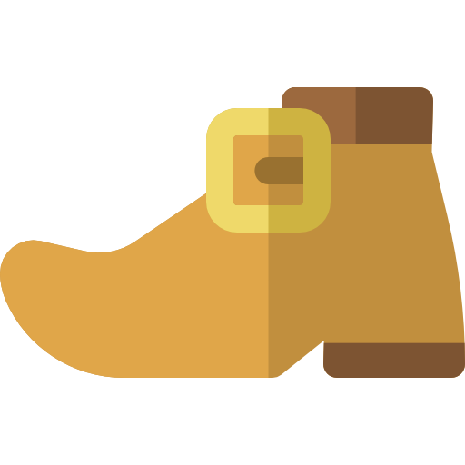

Érase una vez un zapatero al que no le iban muy bien las cosas y ya no sabía qué hacer para salir de la pobreza.Una noche la situación se volvió desesperada y le dijo a su mujer: – Querida, ya no me queda más que un poco de cuero para fabricar un par de zapatos. Mañana me pondré a trabajar e intentaré venderlo a ver si con lo que nos den podemos comprar algo de comida. – Está bien, cariño, tranquilo… ¡Ya sabes que yo confío en ti! Colocó el trocito de cuero sobre la mesa de trabajo y fue a acostarse. Se levantó muy pronto, antes del amanecer, para ponerse manos a la obra, pero cuando entró en el taller se llevó una sorpresa increíble. Alguien, durante la noche, había fabricado el par de zapatos. Asombrado, los cogió y los observó detenidamente. Estaban muy bien rematados, la suela era increíblemente flexible y el cuero tenía un lustre que daba gusto verlo ¡Sin duda eran unos zapatos perfectos, dignos de un ministro o algún otro caballero importante! – ¿Quién habrá hecho esta maravilla?… ¡Son los mejores zapatos que he visto en mi vida! Voy a ponerlos en el escaparate del taller a ver si alguien los compra. Afortunadamente, en cuanto los puso a la vista de todos, un señor muy distinguido pasó por delante del cristal y se encaprichó de ellos inmediatamente. Tanto le gustaron que no sólo pagó al zapatero el precio que pedía, sino que le dio unas cuantas monedas más como propina. ¡El zapatero no cabía en sí de gozo! Con ese dinero pudo comprar alimentos y cuero para fabricar no uno, sino dos pares de zapatos. Esa noche, hizo exactamente lo mismo que la noche anterior. Entró al taller y dejó el cuero preparado junto a las tijeras, las agujas y los hilos, para nada más levantarse, ponerse a trabajar. Se despertó por la mañana con ganas de coser, pero su sorpresa fue mayúscula cuando de nuevo, sobre la mesa, encontró dos pares de zapatos que alguien había fabricado mientras él dormía. No sabía si era cuestión de magia o qué, pero el caso es que se sintió tremendamente afortunado.
Sin perder ni un minuto, los puso a la venta. Estaban tan bien rematados y lucían tan bonitos en el escaparate, que se los quitaron de las manos en menos de diez minutos. Con lo que ganó compró piel para fabricar cuatro pares y como cada noche, la dejó sobre la mesa del taller. Una vez más, por la mañana, los cuatro pares aparecieron bien colocaditos y perfectamente hechos. Y así día tras día, noche tras noche, hasta el punto que el zapatero comenzó a salir de la miseria y a ganar mucho dinero. En su casa ya no se pasaban necesidades y tanto él como su esposa comenzaron sentir que la suerte estaba de su parte ¡Por fin la vida les había dado una oportunidad!
Pasaron las semanas y llegó la Navidad. El matrimonio disfrutaba de la deliciosa y abundante cena de Nochebuena cuando la mujer le dijo al zapatero: – Querido ¡mira todo lo que tenemos ahora! Hemos pasado de ser muy pobres a vivir cómodamente sin que nos falte de nada, pero todavía no sabemos quién nos ayuda cada noche ¿Qué te parece si hoy nos quedamos espiando para descubrirlo? – ¡Tienes razón! Yo también estoy muy intrigado y sobre todo, agradecido. Esta noche nos esconderemos dentro del armario que tengo en el taller a ver qué sucede. Así lo hicieron. Esperaron durante un largo rato, agazapados en la oscuridad del ropero, dejando la puerta un poco entreabierta. Cuando dieron las doce en el reloj, vieron llegar a dos pequeños duendes completamente desnudos que, dando ágiles saltitos, se subieron a la mesa donde estaba todo el material. En un periquete se repartieron la tarea y comenzaron a coser sin parar. Cuando terminaron los zapatos, untaron un trapo con grasa y los frotaron con brío hasta que quedaron bien relucientes.
A través de la rendija el matrimonio observaba la escena con la boca abierta ¡Cómo iban a imaginarse que sus benefactores eran dos simpáticos duendecillos! Esperaron a que se fueran y la mujer del zapatero exclamó: – ¡Qué seres tan bondadosos! Gracias a su esfuerzo y dedicación hemos levantado el negocio y vivimos dignamente. Creo que tenemos que recompensarles de alguna manera y más siendo Navidad. – Estoy de acuerdo, pero… ¿cómo podemos hacerlo? – Está nevando y van desnudos ¡Seguro que los pobrecillos pasan mucho frío! Yo podría hacerles algo de ropa para que se abriguen bien ¡Recuerda que soy una magnífica costurera! – ¡Qué buena idea! Seguro que les encantará.
La buena señora se pasó la mañana siguiente cortando pequeños pedazos de tela de colores, hilvanando y cosiendo, hasta que terminó la última prenda. El resultado fue fantástico: dos pantalones, dos camisas y dos chalequitos monísimos para que los duendes mágicos pasaran el invierno calentitos. Al llegar la noche dejó sobre la mesa del taller, bien planchadita, toda la ropa nueva, y después corrió a esconderse en el ropero junto a su marido ¡Esta vez querían ver sus caritas al descubrir el regalo!Los duendes llegaron puntuales, como siempre a las doce de la noche. Dieron unos brincos por el taller, se subieron a la mesa del zapatero, y ¡qué felices se pusieron cuando vieron esa ropa tan bonita y colorida! Alborozados y sin dejar de reír, se vistieron en un santiamén y se miraron en un espejo que estaba colgado en la pared ¡Se encontraron tan guapos que comenzaron a bailar y a abrazarse locos de contento!Después, viendo que esa noche no había cuero sobre la mesa y que por tanto ya no había zapatos que fabricar, salieron por la ventana para no regresar jamás. El zapatero y su mujer fueron muy felices el resto de su vida pero jamás olvidaron que todo se lo debían a dos duendecillos fisgones que un día decidieron colarse en su taller para fabricar un par de hermosos zapatos.
 Volver atrás